Good Protein Sources
Recently started going to the gym? Great! But just going to the gym won't give you gains. You need a lot of protein for your body to actually grow. You need about 1.2 to 1.7 grams of protein per kilogram of body weight per day to make progress. So, here are some food recommendations rich in protein.
-
Lean Beef
Lean beef is a fantastic source of protein, iron, and B vitamins. It's great for muscle growth and repair.sometimes lean beef provides b12 vitamin over 100% of the Daily Value (DV) per 100g, not only that, it also provides huge amounts of zinc (often provides over 50% of the DV).
• Per 100g of Lean Beef contains 26g of protein.
• A 3-ounce (85g) serving of cooked lean beef contains about 22-25g of protein.
-
Pork Tenderloin
Pork tenderloin is a lean cut of pork that's low in fat and high in protein. It's a great alternative to beef if you're looking for something different. It's also very tender and cooks quickly, not only that it contains Lots of vitamin b1, vitamin b3(niacin), vitamin b6, Zinc and etc.
• Per 100g of Pork Tenderloin contains 26g of protein.
• A 3-ounce (85g) serving of cooked pork tenderloin contains about 22-24g of protein. -
Chicken Breast
This is a classic for a reason! Chicken breast is lean, meaning it's packed with protein without a lot of extra fat. It's also super versatile – you can grill it, bake it, shred it for tacos, or toss it in a salad. It's like a blank canvas for flavor.
• Per 100g of Chicken Breast contains 31g of protein.
• A skinless, cooked Chicken Breast (174g) contains 56g of Protein. -
Turkey Breast
Turkey breast is an excellent protein source, very similar to chicken breast in its lean profile and versatility. It's often chosen as a healthier alternative to red meat due to its lower saturated fat content.
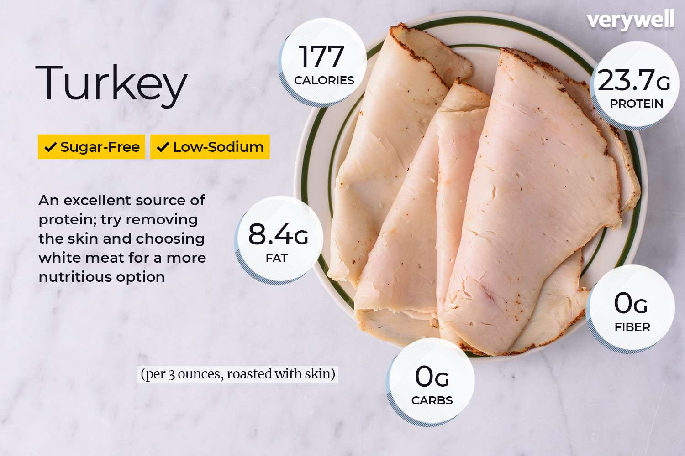
• Per 100g of Turkey Breast contains 29g of protein.
• A skinless, cooked Turkey Breast (174g) contains approximately 50g of protein. -
Eggs
Eggs are incredibly nutrient-dense, providing all nine essential amino acids (the building blocks of protein). Plus, they're quick to cook – scrambled, boiled, fried, omelets... you name it. Great for any meal, not just breakfast!
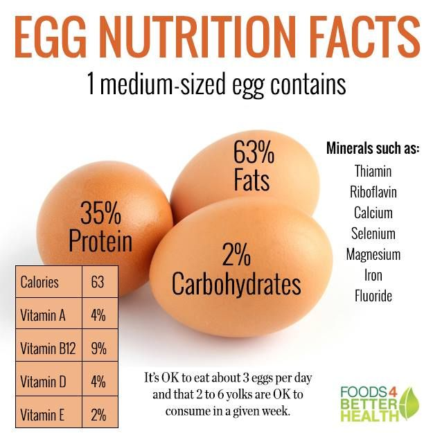
• A small egg (40g) contains 4.9g of protein.
• A medium egg (50g) contains 6.3g of protein.
• A large egg (60g) contains 7.5g of protein. -
Greek Yogurt
If you haven't tried Greek yogurt, you're missing out. It's a strained yogurt, which makes it much thicker and gives it way more protein than regular yogurt. It's fantastic with some berries and a drizzle of honey.
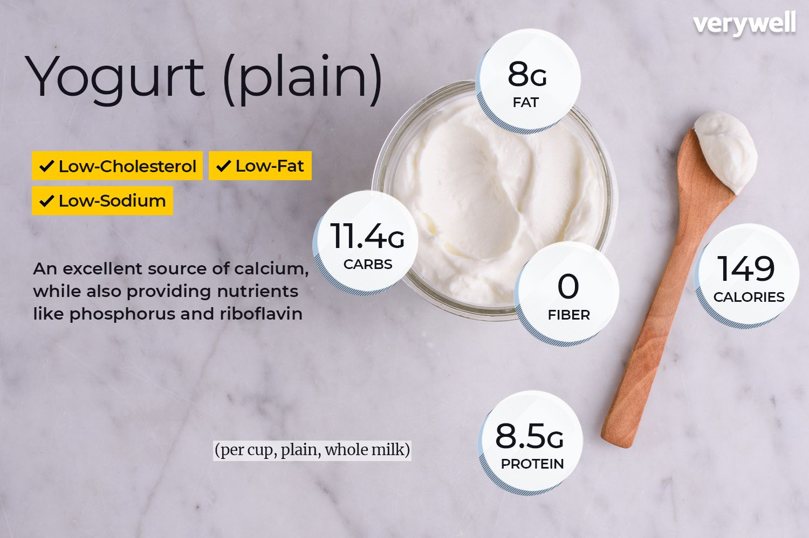
• 100g of Plain Greek Yogurt contains 9.7g of protein. -
Buckwheat
Buckwheat is a gluten-free grain-like seed that's high in protein and fiber. It's a great alternative to rice or pasta and can be used in salads, porridge, or even pancakes.
• Per 100g of Cooked Buckwheat contains 3.4g of protein.
• Per 100g of Raw Buckwheat contains 13.3g of protein. -
Milk
Milk is a great source of protein, calcium, and other essential nutrients. It's perfect for smoothies, cereal, or just a glass on its own. If you're lactose intolerant, there are lactose-free options available.
• Per 100g of Whole Milk contains 3.4g of protein.
• Per 100g of Skim Milk contains 3.4g of protein. -
Fish (Salmon, Tuna)
Let's divide Fish into two categories:
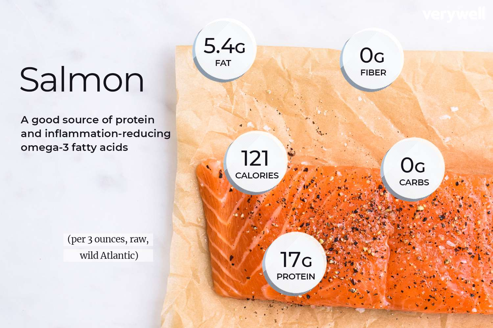
Salmon is not only delicious but also packed with omega-3 fatty acids, which are great for heart health. Tuna is another fantastic option, especially if you're looking for something quick and easy. Both are rich in protein and can be grilled, baked, or even eaten raw in sushi.
• 100g of Salmon contains 20g of protein.
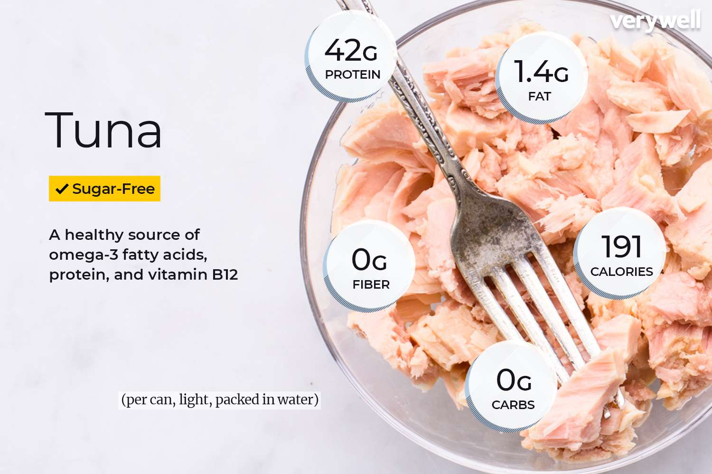
• 100g of Tuna contains 28g of protein. -
Legumes (Lentils, Chickpeas etc.)
Legumes are fantastic sources of plant-based protein, and many are also packed with fiber, vitamins, and minerals. Here are 7 high-protein legumes (cooked, per 100g).
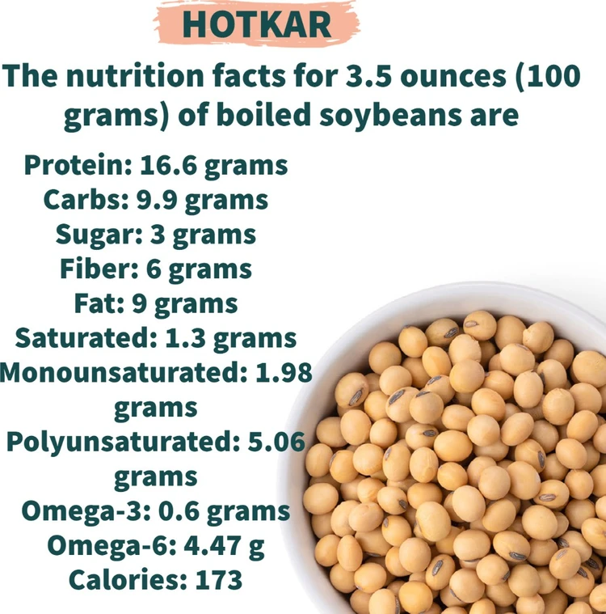
• Soybeans (Edamame): Cooked edamame (immature soybeans) are generally among the highest in protein for legumes.
Protein per 100g (cooked): ~11-12 grams.
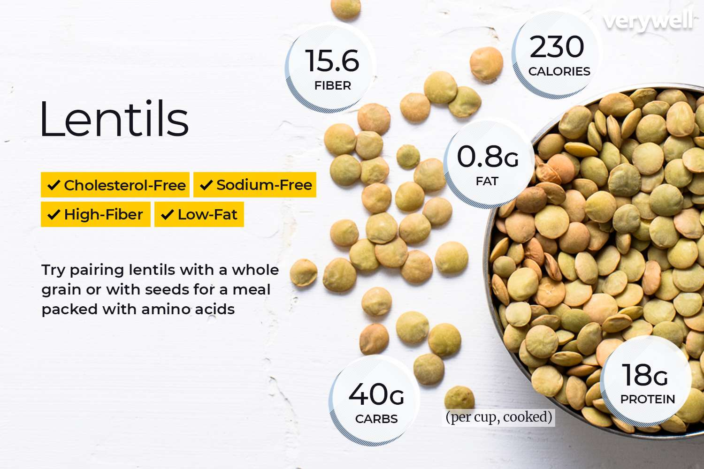
• Lentils: Various types of lentils (brown, green, red) offer substantial protein.
Protein per 100g (cooked): ~9 grams.
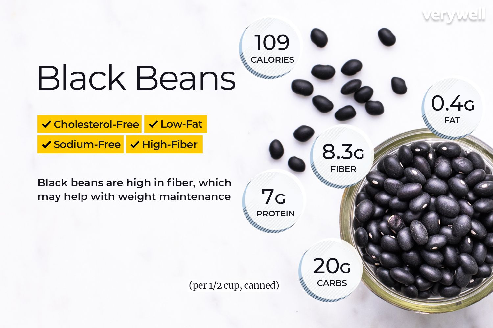
• Black Beans: A staple in many cuisines, black beans are a great source of protein and fiber.
Protein per 100g (cooked): ~9 grams.
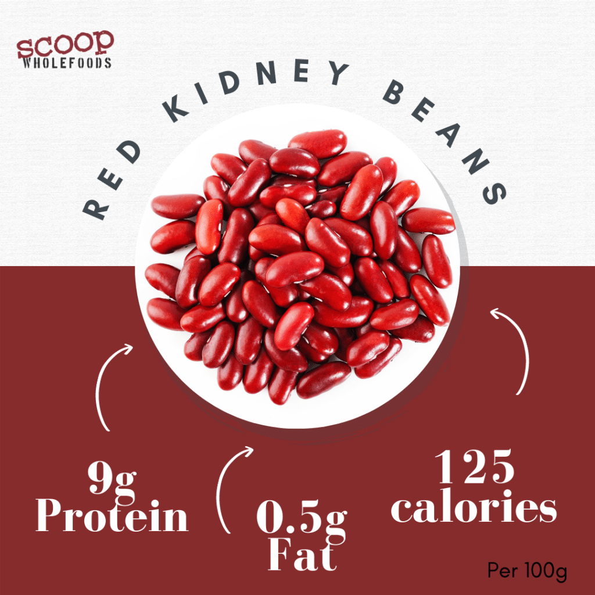
• Kidney Beans: These robust beans are not only high in protein but also rich in iron and folate.
Protein per 100g (cooked): ~8.7-9 grams.
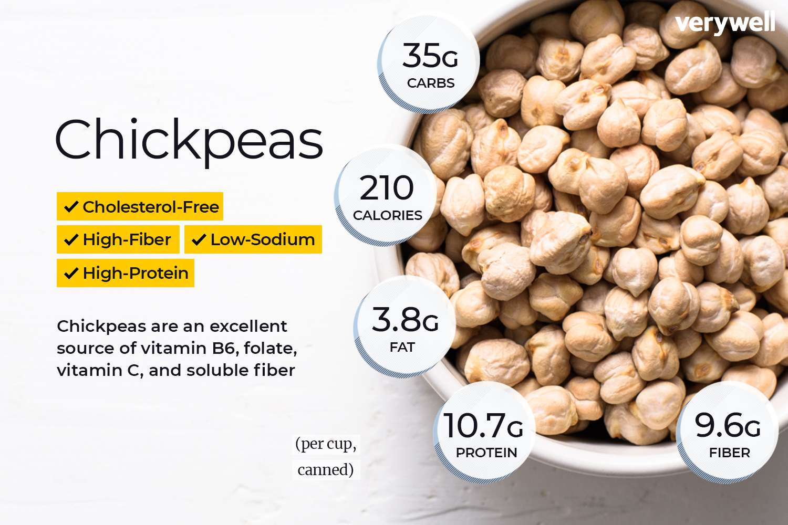
• Chickpeas (Garbanzo Beans): Versatile and popular, chickpeas are a good protein option for a wide range of dishes.
Protein per 100g (cooked): ~8-9 grams.
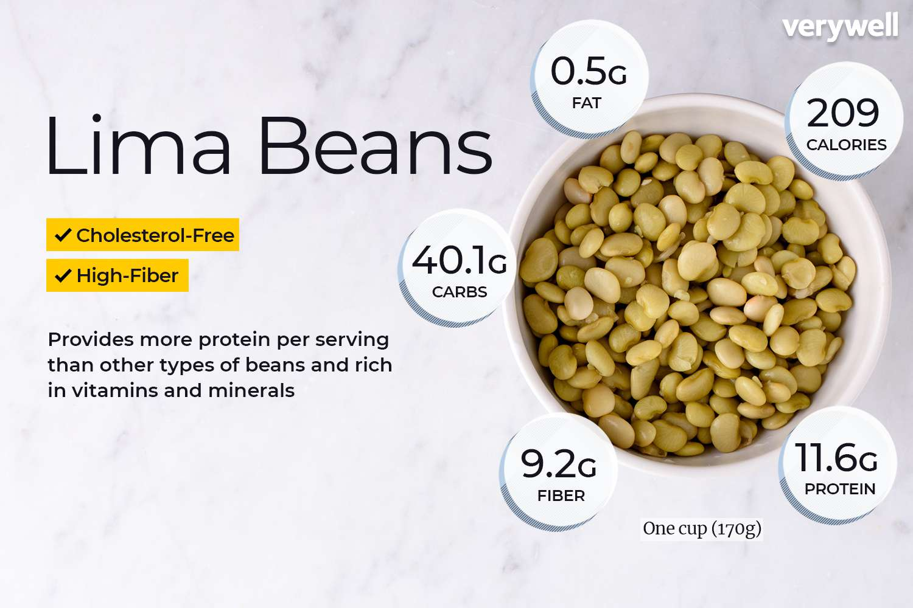
• Lima Beans: While not always as high as some others, cooked lima beans still offer a good amount of protein.
Protein per 100g (cooked): ~6-7 grams.
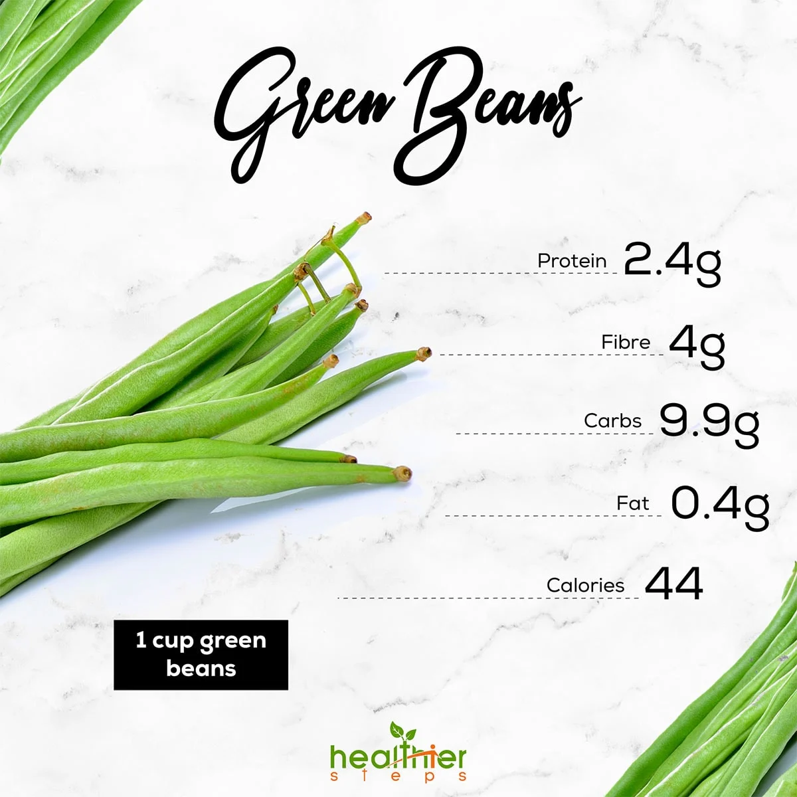
• Green Peas: Often considered a vegetable, green peas are botanically legumes and provide a decent protein punch for their size.
Protein per 100g (cooked): ~5-6 grams. -
Sprouted Bread
s • Sprouted bread Sprouted bread is made from whole grains that have been sprouted,But they are very rich in protein and other nutrients.
• Protein per 100g: Approximately 9-10 grams of protein. -
Sachi Inchi Seeds
Sacha Inchi seeds, also known as Inca peanuts, are a lesser-known but highly nutritious seed. They are rich in protein, omega-3 fatty acids, and various vitamins and minerals.
• Per 100g of Sacha Inchi Seeds contains 30g of protein.
• A 1-ounce (28g) serving of Sacha Inchi seeds contains about 8-9g of protein. -
Seitan
Seitan, also known as wheat meat or wheat gluten, is a high-protein meat substitute made from gluten, the main protein in wheat. It's often used in vegetarian and vegan dishes due to its chewy texture that resembles meat.
• Per 100g of Seitan contains 25g of protein.
• A 3-ounce (85g) serving of seitan contains about 21-24g of protein.
-
Amaranth
Amaranth is a gluten-free grain-like seed that's high in protein and fiber. It's a great alternative to rice or pasta and can be used in salads, porridge, or even pancakes.
• Per 100g of Cooked Amaranth contains 4.7g of protein.
• Per 100g of Raw Amaranth contains 13.3g of protein. -
Nuts and Seeds (Almonds, Chia Seeds)
Nuts and seeds are concentrated sources of plant-based protein, healthy fats (omega-3s and omega-6s), fiber, vitamins, and minerals. They're great for snacks, adding to meals, or using in baking. Let's show some examples of nuts and seeds:
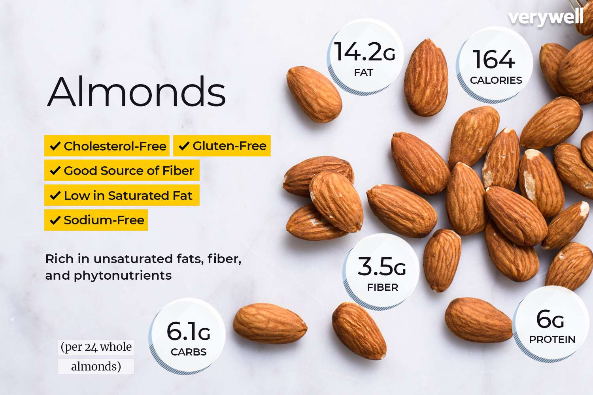
• Almonds: A popular nut, almonds offer a good amount of protein (around 6g per 28g serving) along with vitamin E, magnesium, and healthy monounsaturated fats.
100 grams of almonds typically contain about 21 to 22 grams of protein.
• Sunflower Seeds Sunflower seeds are a great source of protein and healthy fats. They are loaded with vitamin E, Vitamin B6, and etc.
Protein per 100g: ~21 grams.

-
Pumpkin Seeds
Pumpkin seeds are rich in protein, healthy fats, and various minerals like magnesium zinc, and healthy fats. They are often eaten as a snack or added to salads and granola.
• Protein per 100g: Approximately 19 grams of protein. -
Teff SEEDS
Teff is a tiny grain that packs a big nutritional punch. It's rich in protein, fiber, and various vitamins and minerals. Teff is often used to make injera, a traditional Ethiopian flatbread.
• Per 100g of Teff contains 13-14g of protein. -
Quinoa
Often considered a grain, quinoa is actually a seed that's unique among plant foods because it's a complete protein, meaning it contains all nine essential amino acids your body can't produce on its own.
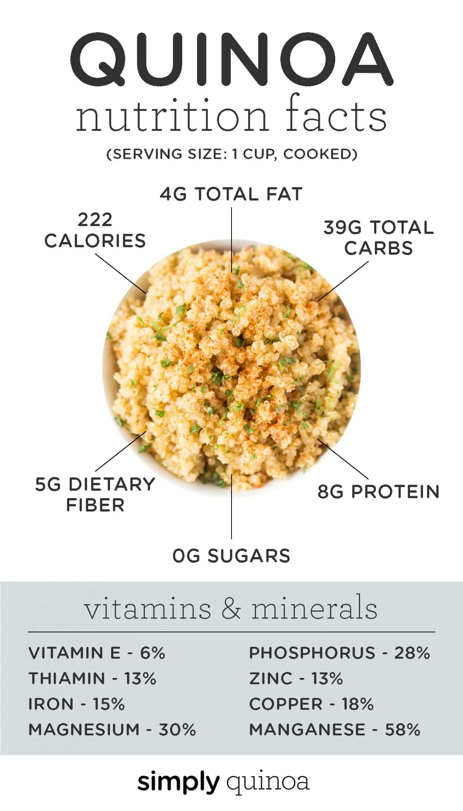
• Cooked Quinoa (per 100g): You can expect approximately 4.4 to 5.8 grams of protein. The most commonly cited figure is around 4.4 grams.
• Raw/Uncooked Quinoa (per 100g): Raw quinoa has a significantly higher protein content, typically ranging from 13 to 15 grams of protein. Keep in mind that you wouldn't consume it raw; it expands considerably when cooked. -
Cottage Cheese
Cottage cheese is a dairy product that's high in protein and low in fat. It's a great option for a snack or as part of a meal. Cottage Cheese is one of my favorites!
• Protein per 100g (low-fat): Approximately 11-12 grams.
• Protein Per 100g (medium fat e.g. 2% milkfat): Typically contains about 11-13 grams of protein.
The fat content would be around 2-4 grams per 100g.
• Protein per 100g (High fat e.g. 4% milkfat or creamed): Typically contains about 13-15 grams of protein.
The fat content would be higher, usually around 4-5 grams per 100g.
-
Tofu and Tempeh
Tofu and tempeh are both excellent plant-based protein sources derived from soybeans, but they differ significantly in their production texture, flavor, and nutritional profiles, particularly in protein content per 100g.
Tempeh, a fermented soybean product, has a firmer texture and a nutty, earthy flavor. The fermentation process makes its nutrients, including protein, more digestible. It's a versatile ingredient for vegan and vegetarian dishes, often used in stir-fries, sandwiches, or as a meat substitute.
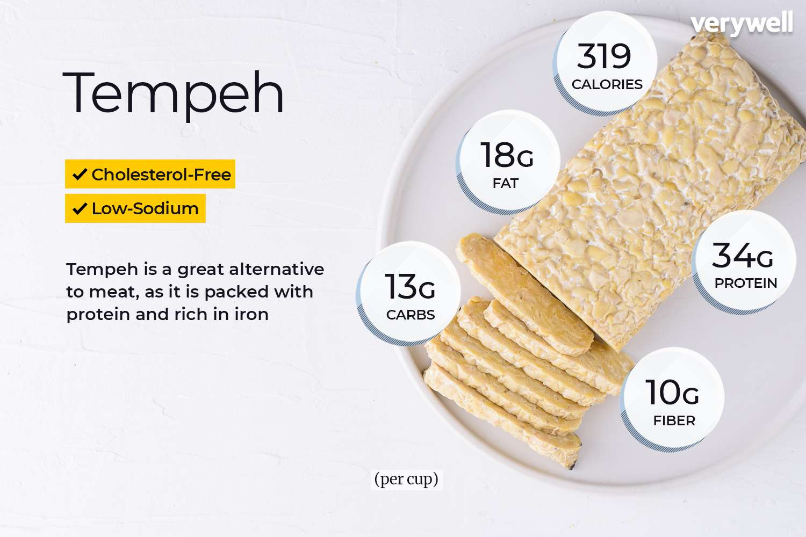
• Tempeh (per 100g): Typically contains around 19-20 grams of protein.There are 4 Types of tofus:
• Silken tofu
~4-6 grams per 100g.
• Soft tofu
~5-8 grams per 100g.
• Firm tofu
~10-12 grams per 100g.
• Extra-firm tofu
~12-15 grams per 100g.
-
Banana's
Bananas are not typically considered a high-protein food, but they do contain some protein along with being a great source of carbohydrates, vitamins, and minerals. They are filled with carbs, potassium, vitamin C, and vitamin B6, making them a nutritious choice for a quick snack or pre-workout fuel.
• Protein per 100g: Approximately 1.1 to 1.3 grams of protein. -
Almond Butter
Almond butter is a delicious and nutritious spread made from ground almonds. It's rich in healthy fats, protein, and various vitamins and minerals. It's a great alternative to peanut butter and can be used in smoothies, on toast, or as a dip for fruits.
• Protein per 100g: Approximately 21-25 grams of protein. -
Cashew butter
Cashew butter is a creamy and delicious spread made from ground cashews. It's rich in healthy fats, protein, and various vitamins and minerals. It's a great alternative to peanut butter and can be used in smoothies, on toast, or as a dip for fruits.
• Protein per 100g: Approximately 18-20 grams of protein. -
Cashew butter
Cashew butter is a creamy and delicious spread made from ground cashews. It's rich in healthy fats, protein, and various vitamins and minerals. It's a great alternative to peanut butter and can be used in smoothies, on toast, or as a dip for fruits.
• Protein per 100g: Approximately 18-20 grams of protein. -
Tahini
Tahini is a paste made from ground sesame seeds. It's rich in healthy fats, protein, and various vitamins and minerals. It's often used in Middle Eastern dishes like hummus and baba ghanoush, but can also be used as a dressing or dip.
• Protein per 100g: Approximately 17-20 grams of protein. -
Peanut Butter
Peanut butter is a popular spread made from ground peanuts. It's rich in healthy fats, protein, and various vitamins and minerals. It's filled with carbs also,but not too much.
• Protein per 100g: Approximately 25 grams of protein. -
Oats
Oats are a whole grain that is rich in fiber, vitamins, and minerals. They are often consumed as oatmeal or used in baking. Oats are a great source of complex carbohydrates and provide sustained energy.
• Protein per 100g: Approximately 13-16 grams of protein. -
Royal Jelly
Royal jelly is a substance produced by honeybees to feed their queen. It's rich in nutrients, including proteins, vitamins, carbs, zinc, magnisium and etc. . While not a traditional protein source, it does contain a significant amount of protein.
• Protein per 100g: Approximately 12-15 grams of protein. -
Black Garlic
Black garlic is a type of aged garlic that has a sweet, tangy flavor and is rich in antioxidants. It's not a traditional protein source, but it does contain some protein.
• Protein per 100g: Approximately 6-8 grams of protein. -
Sea Vegetables(Seaweeds)
there are some edible seawweeds like Nori,Wakame,Kombu and Dulse. They are rich in protein and not only that they are rich in many minerals also.
• Nori: Nori is commonly used in sushi and contains about 30-35 grams of protein per 100g.
• Wakame: Wakame is often used in soups and salads, providing about 10-15 grams of protein per 100g.
• Kombu: Kombu is used in broths and contains about 10-15 grams of protein per 100g.
• Dulse: Dulse is a red seaweed that can be eaten as a snack or added to dishes, providing about 20-25 grams of protein per 100g.
-
Sea Food (Green-lipped Mussels, Cod, e.t.c)
• Green-lipped Mussels: Green-lipped mussels are a type of shellfish native to New Zealand. They are known for their high protein content and omega-3 fatty acids, making them a nutritious seafood option.
• Protein per 100g: Approximately 20-25 grams of protein. -
Protein Supplements (Whey, Casein, Plant-based)
Protein supplements are a convenient way to boost your protein intake, especially if you're struggling to get enough from whole foods. They come in various forms, including whey, casein, and plant-based options.
• Whey Protein: Derived from milk, whey protein is quickly absorbed and is great for post-workout recovery.
Per scoop (30g) typically contains 20-25g of protein.
• Casein Protein: Also derived from milk, casein is digested more slowly, making it ideal for nighttime use.
Per scoop (30g) typically contains 20-25g of protein.
• Plant-based Protein: Made from sources like peas, rice, or hemp, these are great for vegans and those with lactose intolerance.
Per scoop (30g) typically contains 15-25g of protein.
-
Nutritional Yeast
Nutritional yeast is a deactivated yeast that is often used as a cheese substitute in vegan cooking. It's rich in protein, vitamin, particularly B vitamins.
• Protein per 100g: Approximately 40-50 grams of protein. -
Protein Bars
• Protein Bars: These are convenient snacks that can provide a quick protein boost. They come in various flavors and they also have different protein sources and nutrition size.
Per bar (60g) typically contains 15-25g of protein.
Peanuts
Peanuts are legumes that are often grouped with nuts due to their
similar taste and nutritional profile. They are a good source of
protein, healthy fats, and various vitamins and minerals.
• Protein per 100g:
Approximately 25-30 grams of protein.
• Chia Seeds:
These tiny seeds are nutritional powerhouses, often used in
smoothies or overnight oats. They absorb liquid and form a
gel-like consistency. They're a complete protein and an
excellent source of omega-3s, fiber, and various minerals.
Per 100g of chia seeds contains approximately 17g of
protein.
• Flax Seeds:
Flax seeds are tiny but mighty!
They're packed with protein,
omega-3 fatty acids, and fiber.
You can sprinkle them on your
cereal, blend them into smoothies,
or even use them as an egg
substitute in baking.
• Per 100g of Flax Seeds contains approximately 18g of
protein.
• Hemp Seeds:
Hemp seeds are another excellent source of plant-based protein,
healthy fats, and various vitamins and minerals. They have a
slightly nutty flavor and can be added to smoothies, salads, or
yogurt.
• Per 100g of Hemp Seeds contains approximately 31g of
protein.
• Cod:
Cod is a popular white fish that is low in fat and high in
protein. It's often used in fish and chips, but can also be
grilled, baked, or steamed.
Protein per 100g: ~18-20 grams.
• Shrimp:
Shrimp is a low-calorie seafood option that is high in protein
and low in fat. It's versatile and can be used in various dishes,
from stir-fries to salads.
Protein per 100g: ~20-24 grams.
• Crab:
Crab is a delicious seafood option that is low in fat and high
in protein. It's often used in crab cakes, soups, and salads.
Protein per 100g: ~18-20 grams.
• Lobster:
Lobster is a luxurious seafood option that is low in fat and
high in protein. It's often served boiled or steamed, and can
be used in various dishes.
Protein per 100g: ~18-20 grams.
• Octopus:
Octopus is a unique seafood option that is low in fat and high
in protein. It's often grilled or used in salads and stews.
Protein per 100g: ~15-20 grams.
• Haddock:
Haddock is a white fish that is low in fat and high in protein.
It's often used in fish and chips, but can also be grilled,
baked, or steamed.
Protein per 100g: ~18-20 grams.
• Sardines:
Sardines are small, oily fish that are high in protein and omega-3
fatty acids. They're often canned and can be eaten on their own or
added to salads and pasta dishes.
Protein per 100g: ~20-25 grams.
• Anchovies:
Anchovies are small, salty fish that are often used as a flavoring
in dishes like Caesar salad and pizza. They're high in protein and
omega-3 fatty acids.
Protein per 100g: ~20-25 grams.
• Mackerel:
Mackerel is a fatty fish that is high in protein and omega-3 fatty
acids. It's often grilled or smoked and can be used in salads or
sandwiches.
Protein per 100g: ~20-25 grams.
• Clams:
Clams are a type of shellfish that are low in fat and high in
protein. They're often used in soups, pasta dishes, or eaten on
their own.
Protein per 100g: ~15-20 grams.
• Oysters:
Oysters are a type of shellfish that are low in fat and high in
protein. They're often eaten raw on the half shell, but can also
be grilled or baked.
Protein per 100g: ~9-12 grams.
• Scallops:
Scallops are a type of shellfish that are low in fat and high in
protein. They're often seared or grilled and can be used in pasta
dishes or salads.
Protein per 100g: ~20-25 grams.
• Squid:
Squid, also known as calamari, is a low-fat seafood option that is
high in protein. It's often grilled or fried and can be used in
salads or pasta dishes.
Protein per 100g: ~15-20 grams.
• Caviar:
Caviar is a luxury seafood option made from fish eggs. It's high in
protein and omega-3 fatty acids, but also high in sodium.
Protein per 100g: ~25-30 grams.
• Fish Roe:
Fish roe, or fish eggs, are a nutritious seafood option that is
high in protein and omega-3 fatty acids. They can be eaten on their
own or used as a topping for sushi or salads.
Protein per 100g: ~25-30 grams.
• Miso:
Miso is a traditional Japanese seasoning made from fermented soybeans.
It's rich in protein, probiotics, and various vitamins and minerals.
Protein per 100g: ~10-12 grams.